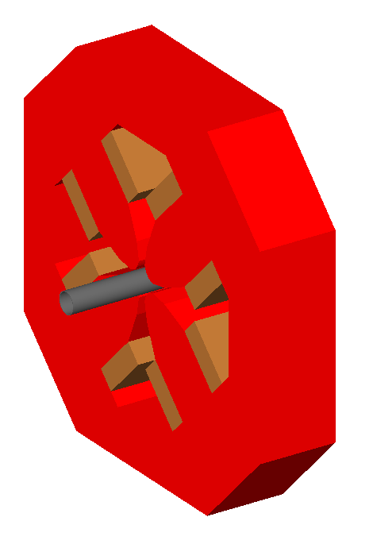
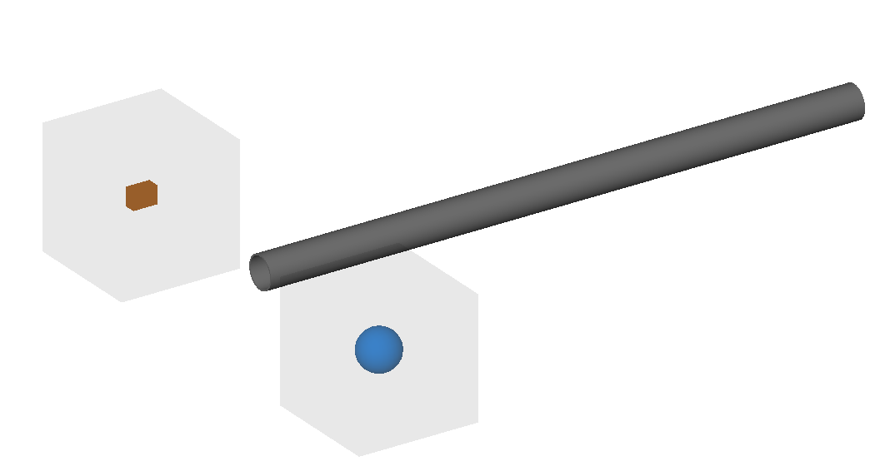
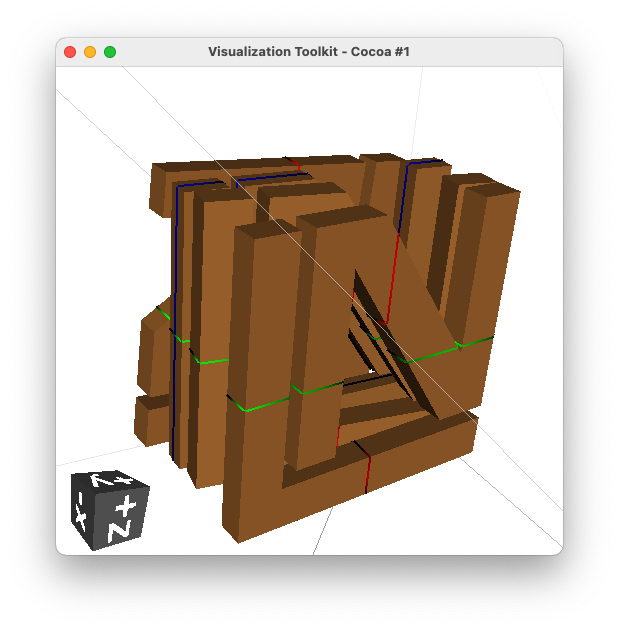
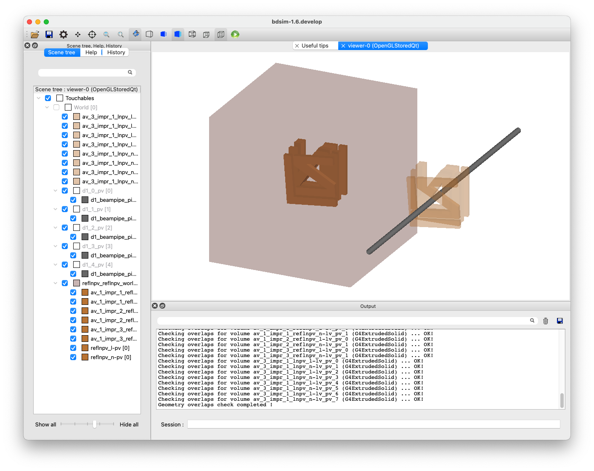

GDML
01_magnet_outer.gmad
A quadrupole flanked by two drifts. The outer geomtery of the quadrupole uses a gdml file of a Hitachi magnet at the ATF2.
How to run:
bdsim --file=01_magnet_outer.gmad
{kind=link}

02_placement.gmad
A placement of a piece of geometry (in GDML format) into the world in an arbitrary location with respect to the coordinate system origin and not the beam line.
How to run:
bdsim --file=02_placement.gmad
03_twogdmls.gmad
Example of using two different GDML files that contain objects of the same name. The Geant4 GDML loader would normally not load these correctly and use the already loaded geometry. BDSIM corrects this behaviour.
How to run:
bdsim --file=03_twogdmls.gmad
{kind=link}

Note
Two shapes are visible alongside a beam pipe - a cuboid and a sphere.
13_stripoutervolume.gmad
Example of stripping the outer volume from a loaded piece of geometry. Firstly, a piece of geometry is created in a Python script using pyg4ometry. This can be seen below.
{kind=link}

VTK visualisation in pyg4ometry of example geometry. Extruded solids with the outline to make the letters L N.
This script can be run with:
ipython
>>> import makeLNGeometry
>>> makeLNGeometry.MakeLNGeometry()
The visualiser will start. Close it to finish the script. This writes a file called
ln.gdml.
A small model is provided in the file 13_stripoutervolume.gmad that places
this geometry twice. Firstly, with just an offset horizontally away from the beam line
and secondly, with an offset along Z only. This second placement would normally overlap
with the beam line, which in this case is a straight line of beam pipes. In the visualisation
above, we do not see the outermost volume, which is actually made of iron (very slightly visible
in light-grey wire-frame lines). In BDSIM, the outermost volume isn’t made transparent and is
visualised, appearing dark red (for iron).
So, to prevent the overlap, we strip off the outer volume for the second placement by setting
the parameter stripOuterVolume=1;.
lnpv: placement, geometryFile="gdml:ln.gdml",
z=1.5*m, axisY=1, axisAngle=1,
angle=0.05, stripOuterVolume=1;
Normally, we would prepare some geometry such as shielding with a box of air as the ‘world’ volume for that file, but here we use iron to make a point and so it doesn’t appear transparent.
{kind=link}
